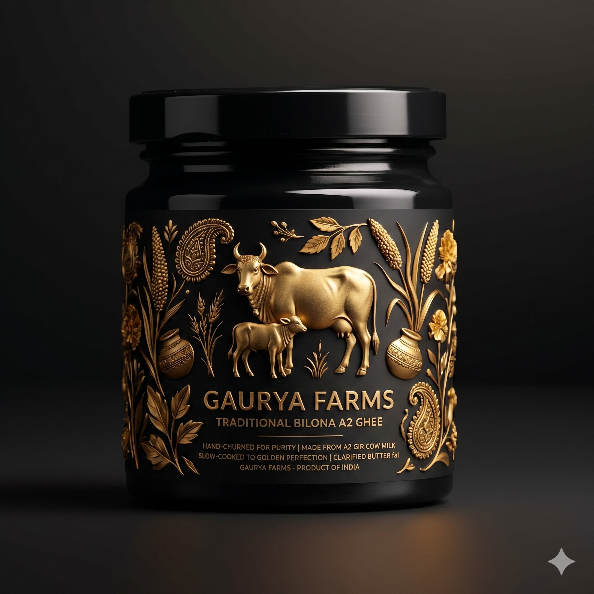

Visual Direction & Moodboard
Dark glass, raw documentary photography of the farm, and a celebration of rich, golden textures.
I. Bespoke Packaging
Moving away from standard plastic jars. Using dark UV-protective glass, minimalist labels, and tactile gold embossing to feel like a premium elixir.



II. Liquid Gold
Visceral, macro photography. Highlighting the rich, amber texture, the perfect pour, and the absolute purity of the fat structure.
III. The Human Anchor
Replacing the clinical ingredient grid with raw, unstyled documentary shots of the farm, the Indian Gir cows, and the genuine Seva of the farmers.